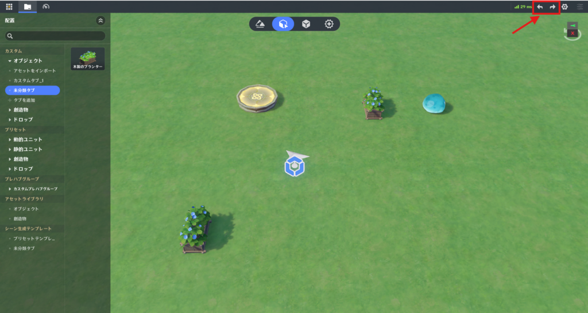
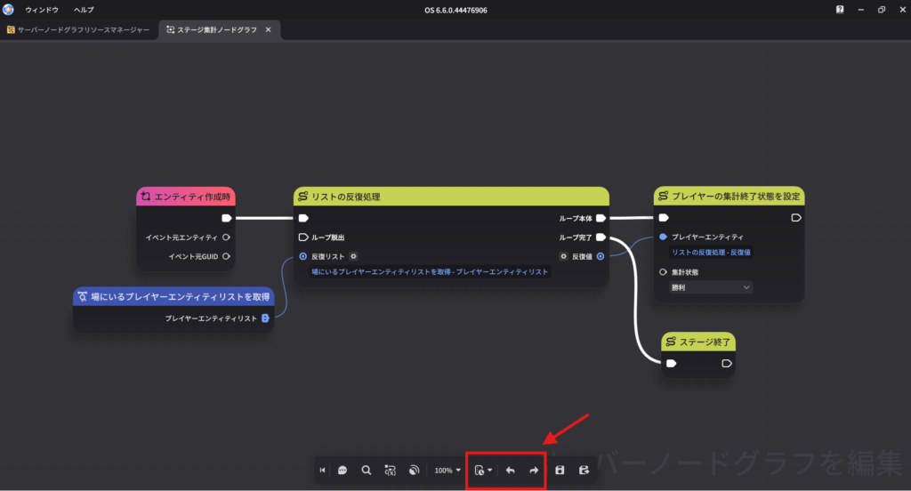
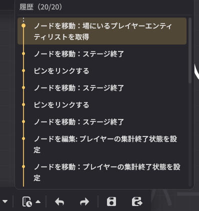

取り消し/復元
⭐1.星々の幻境エディタ画面

画面右上のボタンをクリックするか、Ctrlキー＋Zキー / Ctrlキー＋Yキーで直近の操作を取り消したり、再度適用したりできます。
履歴は最大で50手まで保存されます。この上限を超えた操作は記録されません。
⭐2.星々の箱庭画面

画面下のボタンをクリックするか、Ctrlキー＋Zキー / Ctrlキー＋Yキーで直近の操作を取り消したり、再度適用したりできます。
履歴は最大で20手まで保存されます。この上限を超えた操作は記録されません。

履歴リストを開き、任意のステップをクリックすることで、その時点まで操作を戻したり、復元したりすることができます。